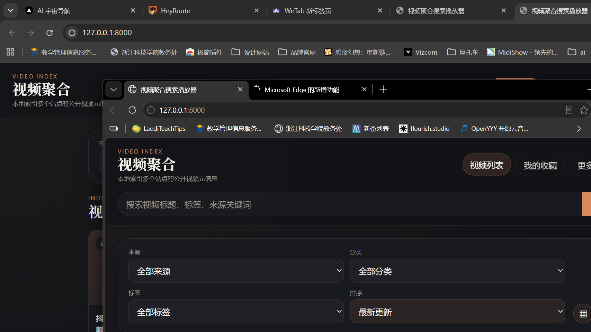

LOCAL SYSTEM / PUBLIC SHOWCASE
把“内容索引系统”做成一个可运行、可浏览、可展示的网页原型。
这个公开版本使用中性演示数据，保留了信息架构、索引逻辑、来源管理和界面气质。 它不是原始本地系统的完整暴露，而是一个适合作品集展示的安全入口。
metadata indexing
source registry
search + filters
system prototype
说明：
本页为公开 demo，只展示产品结构、浏览方式与信息设计。
原始本地版本包含扫描、适配、导出、收藏与数据库更新能力；
这些依赖本地环境或不适合公开演示的功能，在此版本中被安全禁用。

Current local interface preview / dark system dashboard
SYSTEM OVERVIEW
这不是普通落地页，而是一个“来源管理 + 元数据提取 + 索引浏览”的轻量系统原型。
重点不是内容本身，而是我如何把原始网页信息整理成一个可持续更新、可筛选浏览的本地系统。
Source management
维护多个来源入口、分类、刷新节奏与适配方式，让“收集”本身也具备系统结构。
Metadata extraction
把标题、封面、标签、详情页与播放入口整理成结构化信息，而不是停留在原始网页碎片。
Search & filter
通过关键词、标签、来源和场景维度快速回到目标内容，提升浏览效率和检索体验。
Delivery layer
本地系统可以继续扩展收藏、导出和长期维护；公开 demo 只保留安全的界面层与交互逻辑。
DEMO EXPLORER
公开样例数据浏览
下面使用的是中性演示数据，用来展示筛选、标签结构、信息卡片与系统化浏览方式。
SOURCE REGISTRY
公开演示中的来源管理视图
这里模拟本地系统里的 source registry：每个来源都有类别、更新节奏与当前状态。
| Source | Category | Update rhythm | Status |
|---|
PUBLIC SAFETY NOTE
公开站保留设计与系统能力，不提供真实扫描、导出与跳转能力。
这样既能保证作品集中的展示链接稳定、安全，也能清晰说明这个项目真正有价值的部分： 信息架构能力、系统化界面能力，以及把本地工具思维转译成网页产品原型的能力。